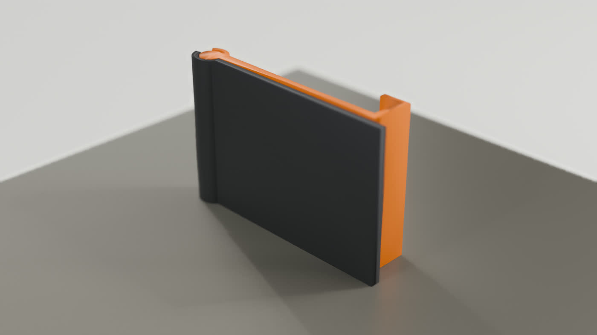
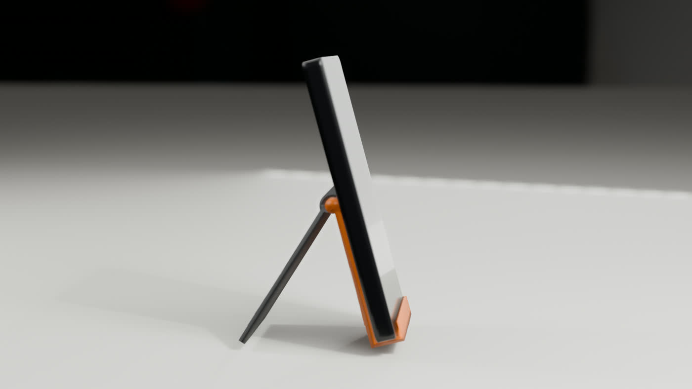
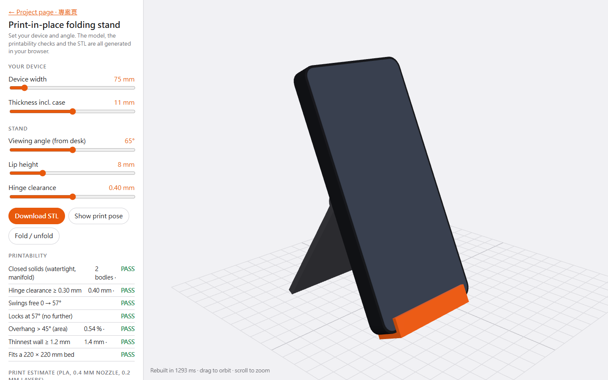

Five sliders; every change rebuilds the solid in 0.5–4 s and re-runs the printability checks. If a check fails, the download button says so.
How it prints in place · 怎麼一次印出


- On its side. Hinge axis vertical, so no supports; overhang under 1 % of the surface.
- Pinless cone pivots. Alternating knuckles sit in matching 45° recesses one clearance away.
- Printed stop. A split barrel closes its gap at exactly the viewing angle you set.

Checks on the default size · 預設尺寸的檢查
| Solids | 2 closed, manifold bodies (front leg, rear leg); every edge shared by exactly two faces |
|---|---|
| Hinge clearance | 0.40 mm everywhere (target ≥ 0.30 mm), measured between the two bodies |
| Motion | Swings free from the print pose to 57° and locks there (boolean overlap test at every step) |
| Overhang > 45° | 0.54 % of the surface, all of it the undersides of the knuckles |
| Thinnest wall | 1.4 mm around the cone recess (3 perimeters at 0.4 mm) |
| Bed | 92 × 26 mm footprint, 60 mm tall; fits any 220 × 220 mm printer |
| Print estimate | 44 g PLA (14.7 m), about 1 h 20 min |
The browser and an independent Python check (trimesh ray sampling, closest-point clearance) agree. A separate CadQuery build of the same design matches the volume within 0.01 %. Full results: analysis.json
How the print estimate works · 列印估算方法
No slicer is involved. The estimate assumes PLA, a 0.4 mm nozzle and 0.2 mm layers:
- Shell: side area × 1.2 mm of walls, plus flat area × 0.8 mm of top and bottom skins.
- Infill: the remaining volume at 15 %.
- Mass: extruded volume × 1.24 g/cm³.
- Time: walls at 8 mm³/s, infill at 12 mm³/s, plus 1.5 s per layer and 2 min for start-up.
Expect it to be within about ±25 % of a slicer's figure.
Files
- printable-stand_print-pose.stl: default size, ready to slice
- printable-stand_print-pose.3mf: the same, as two named objects
- printable-stand_print-pose.step and printable-stand_use-pose.step: CadQuery solids for any CAD program
Geometry runs on the Manifold kernel (Apache-2.0) compiled to WebAssembly; the 3D view uses three.js (MIT). Licenses: Manifold, three.js.